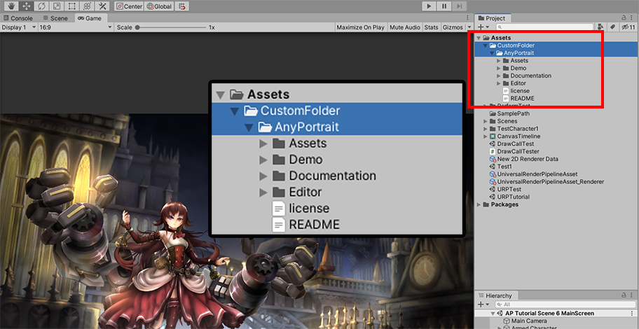
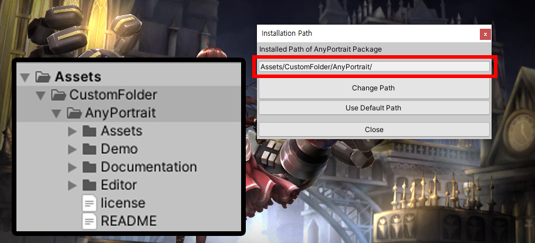
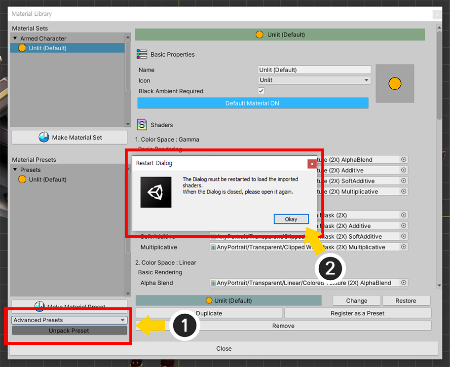
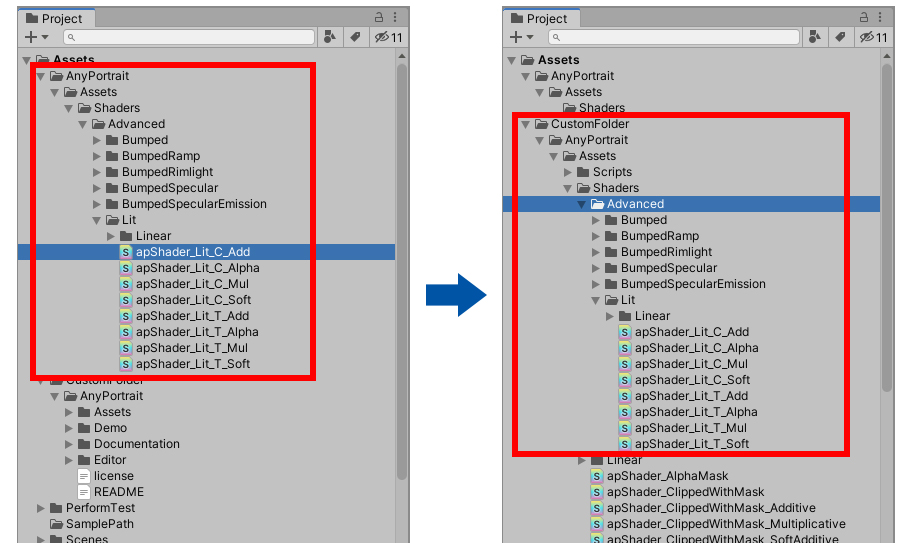

AnyPortrait > 메뉴얼 > 패키지 경로 변경하기
패키지 경로 변경하기
1.2.3
AnyPortrait 패키지를 설치하면, 패키지의 파일들은 "Assets/AnyPortrait"와 그 하위의 경로에 설치됩니다.
AnyPortrait 에디터는 많은 리소스를 사용하는데, 패키지가 설치된 경로로부터 로드를 합니다.
사용자에 따라서는 협업을 위해서 AnyPortrait가 설치된 경로를 다른 곳으로 옮길 필요가 있습니다.
하지만 AnyPortrait가 설치된 폴더를 다른 경로로 이동시키면, 에디터는 열리지 않습니다.
이 페이지에서는 AnyPortrait 패키지의 경로를 바꾸는 방법을 설명합니다.

AnyPortrait를 설치하면 위와 같이 "Assets/AnyPortrait"에 모든 파일들이 위치합니다.
AnyPortrait 폴더를 다른 곳으로 이동시켜봅시다.

여기서는 "CustomFolder"라는 새로운 폴더를 만들고, AnyPortrait 폴더를 그 하위로 이동시켜보았습니다.

에디터를 실행해보면, 에디터는 열리지않고 위와 같은 경고 메시지가 나타납니다.
위 메시지는 패키지의 내용이 손상되었거나 경로가 바뀌었음을 알려줍니다.

바뀐 경로를 입력하여 AnyPortrait 에디터가 실행되도록 만들어봅시다.
유니티 에디터로 돌아와서 Window > AnyPortrait > Change Installation Path를 선택합니다.

AnyPortrait 패키지 경로를 설정하는 다이얼로그가 나타납니다.
(1) Change Path 버튼을 누릅니다.
(2) 변경된 위치의 AnyPortrait 폴더를 선택합니다.
주의
폴더의 이름을 변경하면 안되며, Assets 폴더의 외부에 위치해서도 안됩니다.
AnyPortrait 폴더 내부의 리소스들의 경로를 수정하는 것도 문제를 야기시킬 수 있습니다.

위와 같이 변경된 경로와 동일하게 패키지의 설치 경로 설정이 변경되었습니다.
만약 기본값으로 되돌리려면 Use Default Path 버튼을 누르면 됩니다.

에디터를 열기 전에, 에디터가 잘못된 경로로부터 리소스를 계속 로드하려고 할 수 있으므로 리셋을 해야합니다.
Window > AnyPortrait > Reset Editor를 실행합니다.

이제 AnyPortrait 에디터가 정상적으로 실행됩니다.
변경된 경로로 재질 프리셋 설치하기
AnyPortrait의 대부분의 리소스는 설정에 따라 변경된 경로로부터 로드가 됩니다.
그렇지만 예외가 하나 있습니다.
재질 라이브러리(관련 페이지)의 재질 프리셋을 설치하면 기본 경로에 설치가 되기 때문입니다.
이 경우엔 다음의 방법으로 문제를 해결하시면 됩니다.

재질 라이브러리를 열어서 재질 프리셋을 설치해봅시다.
Material Library 버튼을 눌러서 재질 라이브러리를 엽니다.

(1) 재질 프리셋을 선택하고 Unpack Preset 버튼을 눌러서 설치합니다.
(2) 설치가 끝나면 재질 라이브러리를 재시작하라는 메시지가 나타납니다. Okay 버튼을 누르고 재질 라이브러리를 다시 엽니다.

(1) 설치된 재질 프리셋 중 하나를 선택합니다.
(2) 재질 프리셋의 Shader 에셋들이 인식되지 않는 것을 볼 수 있습니다.
사용자가 재질 세트(Material Set)를 직접 만든다면 Shader는 인식이 되지만, 프리셋은 고정 경로를 이용하므로 여기서 인식이 되지 않습니다.

유니티 에디터로 돌아가서 프리셋이 설치된 폴더를 확인해봅시다.
재질 프리셋은 변경된 경로가 아닌 원래의 경로(Assets/AnyPortrait)의 하위에 설치가 됩니다.
이 파일들을 변경된 패키지 경로에 맞게 이동시켜야 합니다.

재질 프리셋은 "Assets/AnyPortrait/Assets/Shaders"의 하위에 프리셋 이름과 유사한 폴더가 생성되어 설치됩니다.
만약 Advanced Presets을 설치했다면, 이동시켜야하는 폴더의 이름은 "Advanced"입니다.
이 폴더를 "Assets/~(변경된 루트 폴더)/AnyPortrait/Assets/Shaders"로 이동시킵니다.

파일들을 이동시키면 불필요한 폴더가 남습니다.
이 폴더들을 삭제합니다.

이제 재질 프리셋의 Shader 에셋들이 정상적으로 로드되는 것을 볼 수 있습니다.